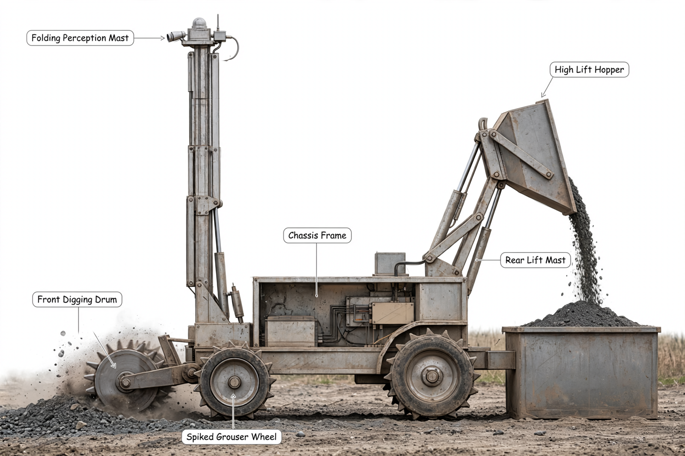

Hardware Scientist — concept report
Lunar regolith excavation robot
Future lunar bases need loose surface soil (regolith) for building and for extracting oxygen. Design a small robot that drives over a bed of lunar soil simulant, digs it up, carries it and dumps it into a collection bin, operated remotely or autonomously by a team that cannot see or hear the robot.
- Robot mass at most 60 kg
- Fits within 1.0 m long, 0.5 m wide and 0.5 m high at the start
- Digs Black Point 1 (BP-1) lunar basalt regolith simulant
- Controlled remotely or autonomously, with the operators out of sight and hearing of the robot
The concept

Big spiky wheels roll over loose soil while a spinning front drum scoops soil into a bucket that is lifted about 1 m to pour into a bin, steered by video from a tall folding mast that stops the machine if the signal is lost.
Load: Hopper -> Rear lift mast -> Wheels | Measured: IMU -> Onboard computer
Three decisive design choices
- Front transverse single drum with 30 mm shallow cut for low 39 N reaction instead of drag blade or deep cut
- Rear high-lift mast with 0.15 m dual actuators through 4-to-1 chain at 0.80 efficiency to reach 1.05 m pour lip with 0.30 m overhang
- Purchasable 24 V 20 Ah LiFePO4 pack for 480 Wh at 90.6 Wh per kg giving 53.0 kg total instead of 1000 Wh in 2.92 kg claim
Does the rear mast lift to the 1.05 m pour lip with 0.30 m overhang stay nose-down and within actuator force once deployed geometry and friction are proven by dimensioned sketch and static calculation?
What happened
How the picture was made

What the critic flagged:
- callout: Leader arrow ends on empty dust cloud left/above drum, not on drum metal


Earlier faults now:
- callout: fixed
What the segmenter saw (SAM 3.1)
Code asked SAM for each part by a plain phrase and measured the boxes against what the design expects; the critic received the differences as evidence.

How the council changed
Revision 1
- Mara — Excavation and Mobility Engineer's instructions changed:
-**Domain:** drive system, traction on loose soil, digging tool. -**Ownership:** locomotion (wheels/tracks), excavation bucket / drum / blade geometry, digging forces, ground clearance. -**Decision authority:** mobility architecture, excavator type and its mounting to chassis. Must ensure design drives over BP-1 bed and digs without exceeding mass/size limits. +**Domain:** drive system, traction on loose soil, digging tool. +**Ownership:** locomotion architecture, excavation tool geometry, digging forces, ground clearance. +**Decision authority:** mobility architecture, excavator type and its mounting to chassis. Must ensure design drives over simulant bed and digs without exceeding mass and startup envelope limits. Must articulate traction, flotation, and cutting constraints with cross-domain effects on mass, power, and dump stability. Must cite traction and cutting evidence for wheel-versus-track and tool choice. Must withhold ready while blocking objections owned by others remain open and must condition support for integration on closure of mass and dump proofs owned by others.
- Theo — Autonomy and Remote Operations Engineer's instructions changed:
-**Domain:** sensing, teleoperation and autonomy for out-of-sight / out-of-hearing operation. -**Ownership:** cameras, LiDAR / depth sensing, IMU, E-stop, onboard compute, antenna and remote link, autonomy modes. -**Decision authority:** sensor placement and mast, control architecture, operator interface concept. Must prove operation with no line-of-sight. +**Domain:** sensing, teleoperation and autonomy for out-of-sight and out-of-hearing operation. +**Ownership:** cameras, ranging and depth sensing, inertial sensing, emergency stop, onboard compute, antenna and remote link, autonomy modes. +**Decision authority:** sensor placement and mast, control architecture, operator interface concept. Must prove operation with no line-of-sight. Must articulate sensing, link, and compute constraints with cross-domain effects on mass, power, and envelope. Must post stowed versus deployed mast geometry and mass and power share for the joint table, keep heartbeat stop-and-hold behavior tied to latency and stopping evidence, and withhold ready until joint envelope and mass proofs close.
- Priya — Power, Avionics and Lunar Environment Engineer's instructions changed:
-**Domain:** power, electronics, dust and thermal robustness. -**Ownership:** battery, wiring, motor controllers, sealing against BP-1 basalt dust, power budget. -**Decision authority:** power system sizing, electronics enclosure and dust mitigation. Must keep mass ≤60 kg and fit within startup envelope. +**Domain:** power, electronics, dust and thermal robustness. +**Ownership:** battery, wiring, motor controllers, sealing against basalt dust, power budget. +**Decision authority:** power system sizing, electronics enclosure and dust mitigation. Must keep within mass limit and startup envelope. Must articulate power, energy, and thermal constraints with cross-domain effects on mass and runtime. Must derive sortie energy from budget power and duration, check implied pack specific energy against cited pack-level datasheet value, post corrected pack mass and runtime at full load with evidence, and reconcile with the joint mass total before supporting integration.
- Sam — Structure, Mass and Material Handling Engineer's instructions changed:
-**Domain:** chassis, mass budget, regolith storage and dumping interface. -**Ownership:** frame, hopper/bin-carry volume, dump articulation to collection bin, overall 1.0 m x 0.5 m x 0.5 m envelope and 60 kg budget. -**Decision authority:** structural layout, hopper capacity, dump mechanism and bin interface. Ensures carry-and-dump sequence works. +**Domain:** chassis, mass budget, regolith storage and dumping interface. +**Ownership:** frame, hopper and carry volume, dump articulation to collection bin, overall startup envelope and mass budget. +**Decision authority:** structural layout, hopper capacity, dump mechanism and bin interface. Ensures carry-and-dump sequence works. Must articulate structural, mass, and stability constraints with cross-domain effects on mobility, power, and envelope. Must post pivot positions, guide travel, and linkage force including friction for the lift with useful-versus-input energy check, post tip moment arms with overhang and wheelbase reactions for raised load, post a dimensioned stowed sketch showing frame, wheels, stowed mast, and lowered hopper within start limits, reuse joint mass evidence, state why any recompute differs, and reconcile any changed stability margin with stated geometry change.
References
101 sources found by the council's searches and the prior-art check (click to open)
- hou.usra.edu — 5068.PDF (2019) https://www.hou.usra.edu/meetings/lunarisru2019/pdf/5068.pdf
- ivcan.com — FPV CVBS AV encoder decoder video stream over IP Ethernet https://ivcan.com/p/fpv-cvbs-av-encoder-decoder-video-stream-over-ip-ethernet/
- api-dev.govwhitepapers.com — Fiber-Optic vs. RF Communication Links for FPV Drones in Military Environments (2026) https://api-dev.govwhitepapers.com/wp-content/uploads/2026/02/FPV_Drone_FiberOptic_vs_RF_WhitePaper_v-7.pdf
- robot-advance.com — Robomaster S1 DJI: DJI programmable educational robot https://www.robot-advance.com/EN/art-dji-robomaster-s1-eu-2608.htm
- fairino-amr-doc.readthedocs.io — Functional Safety https://fairino-amr-doc.readthedocs.io/en/latest/_downloads/3fad9b2fb9495445b01780c81d0c1b31/AMR-300%20Composite%20Mobile%20Robot%20V2.0%20-%20Whole%20Machine%20Functional%20Safety%20Certification%20Certificate.pdf
- multitech.ro — My Document (2026) https://www.multitech.ro/wp-content/uploads/2026/01/MiR600-Specifications-2.99.pdf
- robotics247.com — TÜV Rheinland Certifies the Safety Features of Mobile Industrial Robots’ AMRs https://www.robotics247.com/article/tuev_rheinland_certifies_the_safety_features_of_mobile_industrial_robots_amrs/Supply_Chain
- files.seeedstudio.com — INDUSTRIAL PRODUCT DATASHEET Intel RealSense LiDAR Depth https://files.seeedstudio.com/Bazaar/product_pdf/113990794.pdf
- thinkrobotics.com — Intel RealSense D435i Depth Camera with IMU - FAQ
- – Atlantis Robotics https://thinkrobotics.com/products/intel-realsense-depth-camera-d435i
- impact.colorado.edu — Sanchez, David Poster 2024 (12JUL24) (2024) http://impact.colorado.edu/lungradcon/2025/presentations/SanchezDavidPoster202412JUL24.pdf
- thinkrobotics.com — Intel RealSense D435 Depth Camera with Global Shutter
- – ThinkRobotics.com https://thinkrobotics.com/products/intel-realsense-depth-camera-d435
- actec.dk — 24v Lithium-Ion battery pack https://actec.dk/media/documents/9C7D3794B117.pdf
- en.actec.dk — 24v Lithium-Ion battery pack 24V battery pack - Lithium Iron-Phosphate (LiFePO https://en.actec.dk/media/documents/5BAA69612E3C.pdf
- actec.dk — 24v Lithium-Ion battery pack https://actec.dk/media/documents/5BAA69612E3C.pdf
- a-m-c.com — ADVANCED Motion Controls https://www.a-m-c.com/ip65-rating/
- zelladc.com — IP65 explained: why it matters for micro data centres https://www.zelladc.com/insights/ip65-explained-what-it-means-and-why-it-matters/
- optraffic.com — IP65 for Traffic Equipment: 5 Common Misconceptions Explained https://optraffic.com/blog/misconceptions-about-ip65-what-you-need-to-know/
- impact.colorado.edu — | BEVAHIOR OF BP-1 AND LHS-1 LUNAR REGOLITH SIMULANTS UNDER VACUUM CONDITIONS. | | https://impact.colorado.edu/lungradcon/presentations/142140b1
- spacegrant.oregonstate.edu — PowerPoint Presentation (2022) https://spacegrant.oregonstate.edu/sites/spacegrant.oregonstate.edu/files/2022-11/tcovert_university_of_portland_uteap_poster.pdf
- uklunabotics.co.uk — KICKOFF EVENT 6 OCTOBER 2025 (2025) http://uklunabotics.co.uk/Lunabotics/UKLunabotics_2025_LaunchSlides.pdf
- mechanical.sdsu.edu — Project 22 - NASA Robotic Mining Competition (2022) https://mechanical.sdsu.edu/news/2022/project-26
- larochelle.sdsmt.edu — untitled (2015) http://larochelle.sdsmt.edu/publications/2015-2019/Simulation of Soft Regolith Dynamic Anchors for Celestial Exploration.pdf
- ntrs.nasa.gov — Lunar Environments https://ntrs.nasa.gov/api/citations/20230016971/downloads/Simulant%20Characterization%20Talk%20LSIC.pdf?attachment=true
- researchgate.net — Three Regolith Simulant Conveyance Systems Tested in Vacuum and Atmospheric Conditions https://www.researchgate.net/publication/374825495_Three_Regolith_Simulant_Conveyance_Systems_Tested_in_Vacuum_and_Atmospheric_Conditions
- docs.rs-online.com — RS PRO Miniature Electric Linear Actuator https://docs.rs-online.com/b168/0900766b81683456.pdf
- assets.northerntool.com — LINEAR ACTUATOR LIGHT DUTY SERIES https://assets.northerntool.com/products/273/documents/manuals/27324.pdf
- permanent.fdlp.gov — GRC_12625_TN18419-1.pdf https://permanent.fdlp.gov/gpo56898/20150000897.pdf
- shanglinmotor.com — linear actuator sl la 25 https://www.shanglinmotor.com/products/linear-actuator/linear-actuator-sl-la-25/
- web1.eng.famu.fsu.edu — Lunabotics Mining Competition Rules (2011) https://web1.eng.famu.fsu.edu/me/senior_design/2011/team19/papers/LMC Rules 2010.pdf
- ni.lithium.com — Fall 2011 NASA Lunabotics Mining Competition Systems Engineering Paper (2011) https://ni.lithium.com/ni/attachments/ni/3035/2049/1/Systems%20Engineering%20Report%20_Mile-High%20Miners.pdf
- web1.eng.famu.fsu.edu — Slide 1 (2011) https://web1.eng.famu.fsu.edu/me/senior_design/2011/team19/presentations/MEAC_Presentation_Final.pdf
- publications.ri.cmu.edu — IJR370217 1550..1564 (2010) http://publications.ri.cmu.edu/storage/publications/pub_files/2010/10/Wettergreen-1550-64-1.pdf
- astro.mech.tohoku.ac.jp — Slip, Traction Control, and Navigation of a Lunar Rover http://www.astro.mech.tohoku.ac.jp/~yoshida/paperlist/i-SAIRAS03-AS21.pdf
- forums.ni.com — Mile-High Miners Nasa Lunabotics Project (Colorado School of Mines) https://forums.ni.com/t5/Student-Projects/Mile-High-Miners-Nasa-Lunabotics-Project-Colorado-School-of/ta-p/3528955
- yumpu.com — <strong>Senior</strong> < https://www.yumpu.com/en/document/view/4215141/senior-design-day-final-presentations-posters-and-/22
- engprojects.tcnj.edu — Competition – NASA Lunabotics https://engprojects.tcnj.edu/lunabotics26/tcnj-lunabotics-team/competition/
- geekbuying.com — DJI RoboMaster S1 4WD FPV RC Robot Intelligent Scratch Python Coding https://www.geekbuying.com/item/DJI-RoboMaster-S1-4WD-FPV-RC-Robot-Intelligent-Scratch-Python-Coding-417200.html
- anodas.lt — DJI RoboMaster S1 https://www.anodas.lt/en/dji-robomaster-s1
- technical.city — Jetson Orin Nano 4 GB https://technical.city/en/video/Jetson-Orin-Nano-4-GB
- kamami.pl — NVIDIA Jetson Orin Nano 4GB - ARM Cortex-A78AE processor module + 4GB RAM https://kamami.pl/en/jetson-modules-som/1184504-nvidia-jetson-orin-nano-4gb-arm-cortex-a78ae-processor-module-4gb-ram.html?SubmitCurrency=1&id_currency=1
- makerselectronics.com — NVIDIA Jetson Orin Nano Developer Kit 8GB https://makerselectronics.com/product/nvidia-jetson-orin-nano-developer-kit-8gb/
- stevensmarine.com — Bioenno Power 24V, 20Ah LFP Battery (ABS, BLF-2420AS) (2024) https://www.stevensmarine.com/New-Inventory-2024-Bioenno-Power-Accessories-24V-20Ah-LFP-Battery-ABS-BLF-2420AS-Stevens-Marine-15017540
- bioennopower.com — 24V 20Ah LiFePO4 Battery – Bioenno Power https://www.bioennopower.com/collections/24v-series-lifepo4-lithium-iron-phosphate-batteries/products/copy-of-24v-20ah-lfp-battery-pvc-blf-2420as
- bioennopower.com — 24V 20Ah LiFePO4 Battery – Bioenno Power https://www.bioennopower.com/products/copy-of-24v-20ah-lfp-battery-pvc-blf-2420as
- aluleader.com — Aluminum Enclosure IP Rating Guide: Complete Selection Guide for Engineers | Aluleader https://www.aluleader.com/blog/aluminum-enclosure-ip-rating-guide-for-engineers/
- cnskyt.com — IP54 vs IP65 Enclosures: Differences, Applications, and How to Choose https://www.cnskyt.com/ip54-vs-ip65-electrical-enclosures/
- gorugged.co.za — IP Ratings explained | Blogs | GoRugged SA https://www.gorugged.co.za/blog-articles/adelia-taljaard/NA/ip-ratings-explained/3
- sciences.ucf.edu — ConstructionwithRegolith (2017) https://sciences.ucf.edu/class/wp-content/uploads/sites/23/2017/03/CLASS-SSERVI-Robotic-Construction-Mueller-v1-March-2017.compressed.pdf
- core.ac.uk — PowerPoint Presentation https://core.ac.uk/download/pdf/80604896.pdf
- newatlas.com — NASA working on RASSOR robot space excavator https://newatlas.com/nasa-rassor-robot-excavator/25994/
- github.com — djmorvay/ysu-nasa-lunabotics - README.md https://github.com/djmorvay/ysu-nasa-lunabotics/blob/HEAD/README.md
- github.com — deejay2545/ysu-nasa-lunabotics — YSU NASA Lunabotics Rover - VHDL https://github.com/deejay2545/ysu-nasa-lunabotics
- keplerelectronics.com — keplerelectronics https://keplerelectronics.com/Wiki/Lunabotics_Senior
- futureengineers.org — Future Engineers :: Lunabotics Junior Challenge :: Gallery :: Phoebe https://www.futureengineers.org/lunaboticsjunior/gallery/56285
- researchgate.net — The Laurentian University Lunabot during the 2011 NASA Lunabotics... https://www.researchgate.net/figure/The-Laurentian-University-Lunabot-during-the-2011-NASA-Lunabotics-Competition-Credit_fig11_272744550
- thomasnet.com — University of Virginia Students Win NASA Challenge With Excavation Rover https://www.thomasnet.com/insights/university-of-virginia-bruno-excavation-rover-nasa-challenge/
- slideserve.com — PPT - NASA Lunabotics Mining Competition Interim Design Presentation PowerPoint Presentation - ID:2504869 https://www.slideserve.com/fritzi/nasa-lunabotics-mining-competition-interim-design-presentation
- news.asu.edu — ASU Lunabotics team competes at Kennedy Space Center https://news.asu.edu/20201228-asu-lunabotics-team-competes-kennedy-space-center
- futureengineers.org — Future Engineers :: Lunabotics Junior Challenge :: Gallery :: Lunar Robot https://www.futureengineers.org/lunaboticsjunior/gallery/56158
- futureengineers.org — Future Engineers :: Lunabotics Junior Challenge :: Gallery :: NASA CHARLIE LUNAR ROVER https://www.futureengineers.org/lunaboticsjunior/gallery/54487
- spaceref.com — RASSOR, The Moon Mining Robot https://spaceref.com/science-and-exploration/rassor-the-moon-mining-robot-4/
- designfax.net — Designfax – Technology for OEM Design Engineers https://www.designfax.net/cms/dfx/opens/articleview.php?nid=4&bid=273&aid=2159&eid=
- philosophy.hi7.co — Mining other worlds https://philosophy.hi7.co/mining-other-worlds-5716eec9eda44.html
- core.ac.uk — SRR ISRU COMPASS - V3 - Final-compressed more https://core.ac.uk/download/pdf/227725500.pdf
- nanowerk.com — NASA working on mining robot for space missions https://www.nanowerk.com/news2/robotics/newsid=28702.php
- academia.edu — Oxygen Production System for Refueling Human Landing System Elements https://www.academia.edu/108343315/Oxygen_Production_System_for_Refueling_Human_Landing_System_Elements
- phys.org — Engineers building hard-working mining robot https://phys.org/news/2013-01-hard-working-robot.amp
- phys.org — Engineers building hard-working mining robot https://phys.org/news/2013-01-hard-working-robot.html?loadCommentsForm=1
- scribd.com — Innovative Bucket-Wheel Design for Lunar Excavators | PDF | Moon | Mars https://www.scribd.com/document/351238756/Skonieczny2011
- space-robotics.org — RASSOR | Space Robotics https://space-robotics.org/robots/lunar/rassor/
- lsc-pagepro.mydigitalpublication.com — Inside Unmanned Systems APR-MAY 2018 Page 18 https://lsc-pagepro.mydigitalpublication.com/publication/?i=608807&p=18&view=issueViewer
- technology.nasa.gov — Regolith Advanced Surface Systems Operations Robot (RASSOR) Excavator https://technology.nasa.gov/patent/KSC-TOPS-7
- grabcad.com — NASA Regolith Advanced Surface Systems Operations Robot (RASSOR) Bucket Drum Design Challenge | Engineering & Design Challenges | GrabCAD https://grabcad.com/challenges/nasa-regolith-advanced-surface-systems-operations-robot-rassor-bucket-drum-design-challenge
- ntrs.nasa.gov — RASSOR - Regolith Advanced Surface Systems Operations Robot - NASA Technical Reports Server (NTRS) https://ntrs.nasa.gov/citations/20150022134
- prezi.com — RASSOR by 21171 21171 on Prezi https://prezi.com/sz_4bygwhgsp/rassor/
- nasa3d.arc.nasa.gov — Regolith Advanced Surface Systems Operations Robot (RASSOR) | 3D Resources https://nasa3d.arc.nasa.gov/detail/RASSOR
- techport.nasa.gov — NASA TechPort - Project https://techport.nasa.gov/view/125628
- science.nasa.gov — Regolith Advanced Surface Systems Operations Robot (RASSOR) - NASA Science https://science.nasa.gov/3d-resources/regolith-advanced-surface-systems-operations-robot-rassor/
- bigthink.com — Want to help design a moon robot? NASA needs you. https://bigthink.com/hard-science/nasa-moon-robot/432
- highergov.com — STTR https://www.highergov.com/contract/80NSSC22PA953/
- science.gov — engineering autonomous space: Topics by Science.gov https://www.science.gov/topicpages/e/engineering+autonomous+space
- amfcse.org — NASA LUNABOTICS CHALLENGE guideBOOK 2026 - 2027 http://www.amfcse.org/s/Lunabotics-Guidebook-2027-10-12-27.pdf
- github.com — asher-plihal/pantherlunabotics2025-2026 - CLAUDE.md https://github.com/asher-plihal/pantherlunabotics2025-2026/blob/HEAD/CLAUDE.md
- science.gov — remote excavation system: Topics by Science.gov https://www.science.gov/topicpages/r/remote+excavation+system
- github.com — roialrogue/pantherlunabotics2025-2026 - .claude/CLAUDE.md https://github.com/roialrogue/pantherlunabotics2025-2026/blob/HEAD/.claude/CLAUDE.md
- github.com — PantherLunabotics2025-2026/CLAUDE.md at 560db41c814db934193b98d364d5717375efb8ce · mianqun/PantherLunabotics2025-2026 https://github.com/mianqun/pantherlunabotics2025-2026/blob/HEAD/CLAUDE.md
- science.gov — nasa lunabotics mining: Topics by Science.gov https://www.science.gov/topicpages/n/nasa+lunabotics+mining
- core.ac.uk — https://ntrs.nasa.gov/search.jsp?R=20120017902 2019-08-30T23:19:56+00:00Z https://core.ac.uk/download/pdf/10572014.pdf
- jenikirbyhistory.getarchive.net — CAPE CANAVERAL, Fla. -- A remote controlled or autonomous excavator, called a lunabot, is on display outside of the "Lunarena" at the Kennedy Space Center Visitor Complex in Florida where university students maneuver their remote controlled lunabots, in a "sand box" of ultra-fine simulated lunar soil during NASA's second annual Lunabotics Mining Competition. Thirty-six teams of undergraduate and graduate students from the United States, Bangladesh, Canada, Colombia and India will participate in NASA's Luna… https://jenikirbyhistory.getarchive.net/amp/media/ksc-2011-4154-158899
- ntts-prod.s3.amazonaws.com — Robotics, Automation and Control https://ntts-prod.s3.amazonaws.com/t2p/prod/t2media/tops/pdf/KSC-TOPS-7.pdf
- space-robotics.org — Infrastructure Pilot Excavator https://space-robotics.org/robots/lunar/ipex/
- ntrs.nasa.gov — Design of an Excavation Robot: Regolith Advanced Surface Systems Operations Robot (RASSOR) 2.0 https://ntrs.nasa.gov/citations/20210011366
- sbel.wisc.edu — Simulation-Based Engineering Lab University of Wisconsin-Madison Technical Report TR–2024–02 A Framework for Designing NASA’s RASSOR Rover using Project https://sbel.wisc.edu/wp-content/uploads/sites/569/2024/05/TR-2024-02.pdf
- vc.easychair.org — EasyChair Preprint https://vc.easychair.org/publications/preprint/9KVr/download
- s.iafastro.directory — Paper ID: 80002 https://s.iafastro.directory/iac/paper/id/80002/abstract-pdf/IAC-23,A3,IP,11,x80002.brief.pdf?2023-04-06.16:46:15
- m.easychair.org — EasyChair Preprint https://m.easychair.org/publications/preprint/9KVr/open
- iafastro.directory — Paper ID: 63057 http://iafastro.directory/iac/paper/id/63057/abstract-pdf/GLEX-2021,10,1,7,x63057.brief.pdf?2021-02-26.10%3A43%3A42
- p.iafastro.directory — IAF SPACE EXPLORATION SYMPOSIUM (A3) https://p.iafastro.directory/iac/paper/id/80002/abstract-pdf/IAC-23,A3,IP,11,x80002.brief.pdf?2023-04-06.16:46:15
- iafastro.directory — Paper ID: 63057 http://iafastro.directory/iac/paper/id/63057/abstract-pdf/GLEX-2021,10,1,7,x63057.brief.pdf?2021-02-26.10:43:42
Files
- Whiteboard replay
- Reference list (Markdown)
- iter_00 transcript · whiteboard
- iter_01 transcript · whiteboard
Run 20261102-153907_lunar-regolith-excavation-robot · total cost $3.77 · conceptual illustration — physical performance not established.